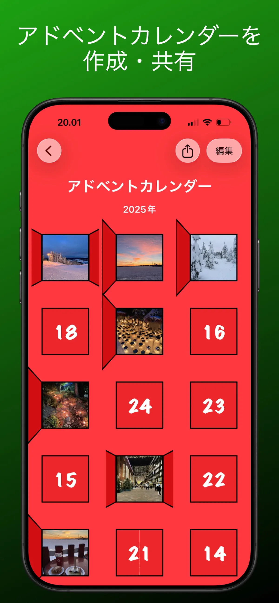
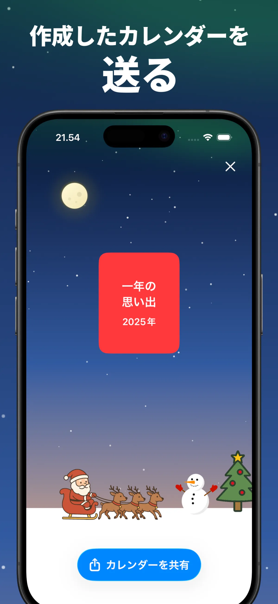
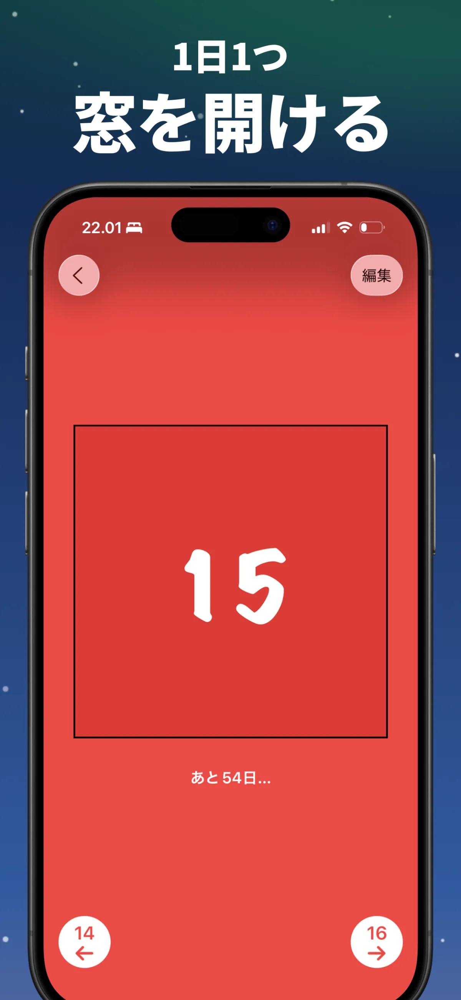
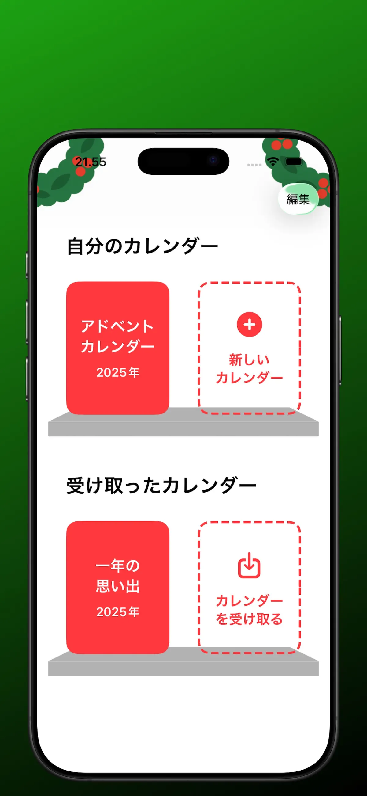

ポケットの中のオリジナルアドベントカレンダー
作って、毎日1つずつ窓を開ける——アプリの画面をご紹介。





3ステップで完成するアドベントカレンダーの作り方
工作の材料も、印刷も、ログインも不要。スマホと24個の小さなサプライズだけ。
カレンダーを作る
新しいカレンダーを作成し、24個の窓それぞれに写真・メッセージ・動画・雪だるまを入れます。窓ごとに違う中身にできるので、世界に一つだけのカレンダーに。
大切な人に共有する
カレンダーを1つのファイルとしてAirDrop・LINE・メールなどで送信。受け取った人は無料アプリで開くだけ。アカウント登録は一切不要です。
毎日1つ窓を開ける
12月1日から毎日1つずつ窓が開き、クリスマスへカウントダウン。先の窓は開けられないので、毎日のお楽しみが続きます。
アドベントカレンダーのガイド＆アイデア
作り方から中身のアイデアまで、デジタルアドベントカレンダーのすべて。
アドベントカレンダーの作り方 — スマホで簡単・無料・早ければ10分
材料なしで作れるデジタル版の完全ガイド。
ガイドを読む → アイデアアドベントカレンダーの中身 — 24日分のアイデア集
恋人・子ども・家族・友達、贈る相手別のアイデア。
ガイドを読む → カウントダウンクリスマスカウントダウンアプリ — 毎日窓を開けて待つ
「あと何日」を数えるだけじゃない、毎日の楽しみを。
ガイドを読む → 恋人遠距離の恋人へのクリスマスサプライズ
会えない12月も、毎日ひとつずつ届く贈り物。
ガイドを読む → 家族子ども向けアドベントカレンダー — 写真と動画で毎朝わくわく
安心設計。のぞき見もできません。
ガイドを読む → 基礎知識アドベントカレンダーとは？意味・由来・いつから開ける？
歴史と楽しみ方、そして自分で作る方法まで。
ガイドを読む →よくある質問
スマホでアドベントカレンダーを作るには？
App StoreからAdvent Makerをダウンロードし、「新しいカレンダー」をタップ。24個の窓に写真・文字・動画・雪だるまを入れるだけです。ログイン不要で、早ければ10分ほどで完成します。詳しく見る →
自分の写真でアドベントカレンダーを作れますか？
はい。すべての窓にカメラロールの写真を入れられるので、思い出の写真24枚でオリジナルのフォトカレンダーが作れます。詳しく見る →
遠くに住む相手に送れますか？
「カレンダーを共有」からLINE・メールなどでファイルを送るだけ。遠距離の恋人や離れて暮らす家族へのサプライズにぴったりです。詳しく見る →
アプリは本当に無料ですか？
App Storeから無料でダウンロードできます。アカウント登録やログインは一切不要です。詳しく見る →
窓には何を入れられますか？
写真、短い動画、YouTubeリンク、毎日のメッセージ、1年の思い出、雪だるまなどが人気です。24日には特別なサプライズを。詳しく見る →
子どもにも使えますか？
4歳以上、アカウント不要・データ収集なし。窓は1日1つずつしか開かないので、のぞき見の心配もありません。詳しく見る →
窓はいつ開けられますか？
12月1日から毎日1つずつ開くことができます。クリスマスまでの残り日数もアプリに表示されます。詳しく見る →
受け取る側もアカウント登録が必要ですか？
不要です。無料アプリを入れて、送られてきたファイルを開くだけ。iPhone・iPad・Macで使えます。詳しく見る →
大切な人の12月が、もっと楽しみになる。
今日、世界に一つだけのアドベントカレンダーを作りませんか？無料で、早ければ10分で完成。クリスマスまで毎日、1つずつ開けてもらえます。